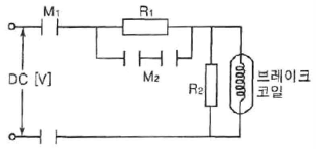
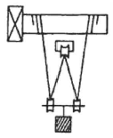
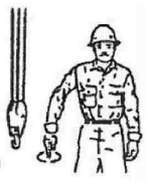

천장크레인운전기능사 (2010-03-28 기출문제)
1과목: 임의 구분
1. 훅의 도르래와 크래브 상단이 충돌하였을 때의 원인은?
- 리미트 스위치 고장
- 저항기 고장
- 전동기 고장
- 브레이크 고장
(정답률: 84%)

2. 주행차륜에서 전동기에 의해 직접 구동하는 차륜을 무엇이라 하는가?
- 종동륜
- 횡동륜
- 역동륜
- 구동륜
(정답률: 88%)
3. 철판 운전 시 가장 적합한 기종은?
- 마그네트 크레인
- 훅 크레인
- 버킷 크레인
- 단조 크레인
(정답률: 92%)
4. 천장크레인의 주행레일에서 스팬이 10m 이하인 경우 스팬편차 한계는?
- ±3㎜
- ±6㎜
- ±10㎜
- ±18㎜
(정답률: 45%)
5. 훅에 대한 설명 중 틀린 것은?
- 목 부분이 30% 이내 벌어진 것까지만 사용한다.
- 균열 검사는 적어도 년 1회 실시한다.
- 홈 자국 깊이가 2㎜가 되면 평활하게 다듬어야 한다.
- 균열된 훅은 용접해서 사용할 수 없다.
(정답률: 60%)
6. 천장크레인의 주행차륜은 좌우차륜의 지름차가 생기면 교환하여야 한다. 좌우차륜의 지름차가 원 치수의 몇 % 이상이면 교환하는 것이 가장 적당한가?
- 구동차륜 0.2%, 종동차륜 0.5%
- 구동차륜 0.5%, 종동차륜 1%
- 구동차륜 2%, 종동차륜 5%
- 구동차륜 1%, 종동차륜 2%
(정답률: 50%)
7. 천장크레인에 사용하는 다이나믹 브레이크는 어느 때 속도제어를 하는가?
- 권상 시에 한다.
- 권하 시에 한다.
- 권상, 권하 시에 한다.
- 주행, 횡행 시에 한다.
(정답률: 69%)
8. 브레이크 제동면이 과열하면 라이닝의 마찰계수가 감소하므로 일반적으로 내열온도는 몇 ℃를 초과해서는 안 되는가?
- 30℃
- 85℃
- 150℃
- 500℃
(정답률: 72%)
9. 크레인의 권상장치에서 드럼의 권과방지 장치를 설명한 것 중 틀린 것은?
- 권과방지 장치는 스크류식, 캠식, 중추식에 주로 사용된다.
- 중추식은 훅(hook)의 접촉에 의거 작동되어진다.
- 캠식은 도르래의 회전에 의거 작동된다.
- 스크류식은 드럼의 회전에 의거 작동된다.
(정답률: 46%)
10. 다음 중 천장크레인의 권상장치 구성요소가 아닌 것은?
- 차륜(Wheel)
- 권상전동기
- 전자석(Magnetic) 브레이크
- 드럼 및 시브
(정답률: 50%)
11. 일반적으로 사용되는 권상 제동용 브레이크(Brake)는?
- 마그네틱 브레이크(Magnetic brake)
- 스피드 컨트롤 브레이크(Speed control brake)
- 에디 커런트 브레이크(Eddy current brake)
- 다이나믹 브레이크(Dynamic brake)
(정답률: 35%)
12. 리미트 스위치에 관한 설명 중 틀린 것은?
- 동작이 확실한 것을 사용해야 한다.
- 횡행용 리미트 스위치는 충격에 견딜 수 있는 것이 좋다.
- 옥외용은 방수가 되는 것이 좋다.
- 필요에 따라 운전자가 임의로 조종 사용해도 좋다.
(정답률: 88%)
13. 거더의 중앙부에 정격하중 및 달기기구 자중을 합산 후 하중을 매달았을 경우 허용 처짐량은 스팬의 얼마를 초과하지 않아야 하는가?
- 1/500
- 1/800
- 1/1200
- 1/1500
(정답률: 73%)
14. 천장크레인의 작업능력을 표시하는 방법은?
- 권상 톤수
- 권상 체적
- 작업 시간
- 작업 속도
(정답률: 71%)
15. 천장크레인의 양정에서 상·하한을 제한하는 장치는 무엇인가?
- 권상 전동기
- 마그네틱 브레이크
- 권상 감속기
- 캠식 권과 방지장치
(정답률: 48%)
16. 크레인의 주행레일 양끝 부분에 완충장치의 레일 정지 기구를 설치하는데, 당해 크레인 주행 차륜 지름의 얼마이상 높이로 설치하는가?
- 1/2 이상
- 1 이상
- 3/2 이상
- 2 이상
(정답률: 66%)
17. 천장크레인의 성능을 표시할 때 순서로 맞는 것은?
- 양정 –스팬 –정격하중 - 사용동력
- 정격하중 –스팬 –양정 - 사용동력
- 사용동력 –스팬 –정격하중 - 양정
- 양정 –스팬 –사용동력 –정격하중
(정답률: 66%)
18. 와이어 드럼 직경과 와이어 직경의 비는 얼마가 가장 적당한가? (단, 드럼 직경=D / 와이어 직경=d)
- D/d = 5 이상
- D/d = 10 이상
- D/d = 20 이상
- D/d = 50 이상
(정답률: 63%)
19. 천장크레인용 훅(Hook)의 입구가 벌어지는 변형량을 시험하는 하중은?
- 훅의 정격하중의 4배에 상당하는 충격하중
- 훅의 정격하중의 3배에 상당하는 동하중
- 훅의 정격하중의 2배에 상당하는 정하중
- 훅의 정격하중의 4배에 상당하는 동하중
(정답률: 65%)
20. 천장크레인의 브레이크 중에서 전기를 투입하여 유압으로 작동되는 브레이크는?
- 오일디스크 브레이크
- 마그네트 브레이크
- 스러스트 브레이크
- 다이나믹 브레이크
(정답률: 59%)
2과목: 임의 구분
21. 작업장에서 전기설비에 접근제한 및 위험표시를 부착하여야 하는 곳은 교류전압이 최소 몇 V 이상인 경우인가?
- 750
- 440
- 220
- 110
(정답률: 30%)
22. 방폭구조로 된 전기설비의 구비조건이 아닌 것은?
- 시건장치를 할 것
- 접지를 할 것
- 환기가 잘 될 것
- 퓨즈를 사용할 것
(정답률: 66%)
23. 마그넷 크레인에 있어서 정전 시 가장 먼저 행하여야 할 사항은?
- 비상스위치를 작동시켜 전자석 및 피부착물을 바닥에 내려놓는다.
- 정전이 해소될 때까지 그대로 방치한다.
- 주 스위치를 끈다.
- 주행 모터용 스위치를 끈다.
(정답률: 71%)
24. 크레인 본 작업을 시작하기 전 장비상태를 파악하기 위해 사전 운전점검 사항과 가장 관계가 먼 것은?
- 브레이크 기능
- 클러치 기능
- 훅 균열 검사
- 와이어로프 감김 상태
(정답률: 32%)
25. 커플링의 설명으로 틀린 것은?
- 고무 플렉시블 커플링은 타이어형 플렉시블 커플링이라고도 부르며 가장 탄력성이 큰 것으로 많이 사용된다.
- 고무 플렉시블 커플링은 전달 토크가 크면 모양이 커지는 단점이 있다.
- 기어 커플링은 전달 토크가 적으므로 부하 변동에 대해서도 위험하다.
- 플랜지형 플렉시블 커플링은 플랜지를 이용하되 설치 볼트 고무 부시를 끼워 그 탄성을 이용한 것이다.
(정답률: 54%)
26. 키(key)에 대한 설명으로 틀린 것은?
- 키의 재료는 축보다 약간 단단한 강철재를 사용한다.
- 평행키의 호칭치수는 폭×높이×길이로 표시한다.
- 보스와 축에 같이 홈을 파는 키를 새들키라 한다.
- 스플라인의 홈의 수는 보통 4~20개 정도이다.
(정답률: 47%)
27. 재료의 응력 중 가장 작은 값을 나타내는 것은?
- 사용 응력
- 허용 응력
- 탄성 한도
- 극한 강도
(정답률: 55%)
28. 다음 설명 중 틀린 것은?
- 천장크레인 감속기에서 제1단 기어는 10% 마모 시 교환하는 것이 좋다.
- 케이싱기어(Casing gear)일 때 오일 사용 시간은 보통 2000시간이다.
- 축은 회전축과 전동축으로 구분된다.
- 커플링은 축이음 장치이다.
(정답률: 32%)
29. 구름베어링의 단점은?
- 과열의 위험이 적다.
- 마멸이 적으므로 빗나감도 적다.
- 길이가 작아도 좋으므로 기계의 소형화가 가능하다.
- 소음 및 진동이 생기기 쉽다.
(정답률: 63%)
30. 권상하중 50톤, 권상속도 1.5m/min인 천장크레인의 전동기 출력은? (단, 권상기의 효율은 70%이다)
- 12.2 kW
- 13 kW
- 17.5 kW
- 8.5 kW
(정답률: 68%)
31. 천장크레인의 전력은 트롤리선–집전장치–배전판의 순서로 공급된다. 배전판에 배치되는 기기가 아닌 것은?
- 유니버셜 컨트롤러
- 과전류 개폐기
- 단락보호장치
- 퓨즈
(정답률: 72%)
32. 천장크레인의 운전 작업 중 틀린 것은?
- 매단짐을 운반 시 높이는 2m 이상 유지해야 한다.
- 운반경로는 부근의 기계나 시설상황을 고려해서 조정한다.
- 신호는 한사람의 신호수에 따른다.
- 부득이한 경우에는 사람 머리를 지나가도 무방하다.
(정답률: 84%)
33. 두 개의 동작을 한 개의 핸들(Handle)로서 동시에 조작하는 제어기(Controller)는?
- 유니버셜
- 크랭크식
- 수평식
- 마그네트식
(정답률: 69%)
34. 천장크레인에서 집전장치라 함은 외부로부터 전력을 크레인 내에 도입하는 장치를 말한다. 그 집전장치로 틀린 것은?
- 폴형 집전장치
- 팬터 그래프형 집전장치
- 슈형 집전장치
- 크랭크형 집전장치
(정답률: 60%)
35. 그림의 직류전자 브레이크 작동 회로에서 R2 저항의 용도는?

- 충전용
- 전류절약용
- 방전용
- 전압분배용
(정답률: 56%)
36. 급유 작업 시 오일이 묻지 않도록 주의해야 할 부분과 관계가 없는 것은?
- 브레이크 휠 또는 라이닝
- 차륜답면 또는 주행레일
- 전동용 롤러체인
- V 벨트
(정답률: 27%)
37. 크레인 작업의 위험성이 아닌 것은?
- 줄걸이 작업방법 불량에 의한 화물의 낙하
- 감속기 오일 등의 폭발로 인한 화재
- 줄걸이용 와이어로프가 훅에서 이탈되어 추락
- 크레인과 벽체와의 안전통로 미확보로 인한 협착
(정답률: 68%)
38. 천장크레인 운전개시 전의 점검 사항으로서 수전전압의 상태가 규정전압보다 몇 % 이상 차이가 나면 운전을 금지해야 하는가?
- ± 3% 이상
- ± 10% 이상
- ± 20% 이상
- ± 30% 이상
(정답률: 65%)
39. 천장크레인으로 하물을 권상할 때의 운전방법 중 가장 양호 한 것은?
- 하물을 조금씩 들어 올리고 그때마다 제어기를 OFF시켜 브레이크지지 능력을 확인한다.
- 천장크레인은 정격하중의 110%는 들어 올릴 수 있으므로 평소와 같이 권상한다.
- 지면에서 20㎝ 쯤 위치에서 일단 정지하고, 줄걸이 이상 여부를 확인 후 계속 권상한다.
- 안전을 위하여 작업을 하지 않는다.
(정답률: 74%)
40. 크레인 운전 후 전동기 부분의 발열이 심한 것을 발견하였다. 발열의 원인으로서 가장 거리가 먼 것은?
- 사용빈도가 높았다.
- 부하가 과대되었다.
- 저항기가 부적정하였다.
- 단선이 되었다.
(정답률: 67%)
3과목: 임의 구분
41. 공칭직경 20㎜의 와이어로프 지름을 측정하였더니 18.5㎜이었다. 직경 감소율 및 사용가능 여부는?
- 7.5%, 사용 가능
- 7.5%, 사용 불가
- 9.3%, 사용 불가
- 7.0%, 사용 가능
(정답률: 75%)
42. 크레인에서 와이어로프를 교환하였다. 이 때 작업 개시 전권상시험을 해 볼 때 가장 양호한 방법은?
- 정격하중의 1/2을 매달아 여러 번 권상·하 해본다.
- 정격하중을 매달아 여러 번 권상·하 해본다.
- 시험하중을 매달아서 권상 ·하 작업을 행해본다.
- 적당량의 부하하중을 운전자가 선정 권상·하 해본다.
(정답률: 60%)
43. 크레인 안전 및 검사 기준상 권상용 와이어로프의 안전율은?
- 4.0
- 5.0
- 6.0
- 7.0
(정답률: 85%)
44. 매다는 체인에서 점검해야 할 사항이 아닌 것은?
- 마모
- 변형
- 균열
- 킹크
(정답률: 85%)
45. 와이어로프의 클립 고정법에서 클립 간격은 와이어로프 직경의 몇 배 이상으로 장착해야 하는가?
- 4
- 5
- 6
- 7
(정답률: 69%)
46. 그림에서 240톤의 부하물을 들어 올리려 할 때 당기는 힘은 몇 톤인가? (단, 마찰계수 및 각종 효율은 무시한다.)

- 80톤
- 60톤
- 120톤
- 240톤
(정답률: 46%)
47. 힘의 3요소는?
- 힘의 크기, 힘의 무게, 힘의 단위
- 힘의 방향, 힘의 작용점, 힘의 크기
- 힘의 크기, 힘의 방향, 힘의 강도
- 힘의 무게, 힘의 거리, 힘의 작용점
(정답률: 75%)
48. 보기 그림과 같은 크레인 수신호가 의미하는 것으로 가장 적합한 것은?

- 훅을 내린다.
- 운전수가 내려온다.
- 운전수가 밑을 자세히 본다.
- 훅을 올린다.
(정답률: 84%)
49. 와이어로프에 대해서 틀린 것은?
- Wire rope에 강심을 쓰는 이유는 큰 절단하중을 위해서 이다.
- Wire rope의 재질은 구리가 주로 사용되며 강도는 50-60kgf/cm2 정도이다.
- Wire rope의 부식을 방지하기 위해 섬유심을 사용한다.
- 고정활차의 Wire rope는 로프에 걸리는 응력이 크게 작용한다.
(정답률: 68%)
50. 크레인에서 일반적인 작업 사항으로 틀린 것은?
- 작업이 종료된 후 훅(Hook)의 크레인의 거더(Girder) 하단부 정도까지 올려놓는다.
- 물건을 운반하지 않을 때는 훅에 와이어를 건채로 이동 해서는 안 된다.
- 모가 난 짐을 운반 시는 규정보다 굵은 와이어를 사용한다.
- 하중의 중량 및 중심의 목측(目測)은 가능한 정확히 해야 한다.
(정답률: 65%)
51. 유류 화재 시 소화방법으로 가장 부적절한 것은?
- B급 화재 소화기를 사용한다.
- 다량의 물을 부어 끈다.
- 모래를 뿌린다.
- ABC소화기를 사용한다.
(정답률: 80%)
52. 무거운 물체를 인양하기 위하여 체인블록을 사용할 때 안전상 가장 적절한 것은?
- 체인이 느슨한 상태에서 급격히 잡아당기면 재해가 발생할 수 있으므로 안전을 확인할 수 있는 시간적 여유를 가지고 작업한다.
- 무조건 굵은 체인을 사용하여야 한다.
- 내릴 때는 하중 부담을 줄이기 위해 최대한 빠른 속도로 실시한다.
- 이동시는 무조건 최단거리 코스로 빠른 시간 내에 이동 시켜야 한다.
(정답률: 75%)
53. 안전·보건표지의 종류와 형태에서 그림의 표지로 맞는 것은?
- 비상구
- 녹십자표지
- 응급구호표지
- 들것이 있다는 표시
(정답률: 47%)
54. 현장에서 작업자가 작업 안전상 꼭 알아두어야 할 사항은?
- 장비의 제원
- 종업원의 작업환경
- 종업원의 기술 정도
- 안전 규칙 및 수칙
(정답률: 77%)
55. 아세틸렌가스 용접의 단점 설명으로 옳은 것은?
- 이동이 불가능하다.
- 불꽃의 온도와 열효율이 낮다.
- 특수 용접에 비해 설비비가 비싸다.
- 유해광선이 아크 용접보다 많이 발생한다.
(정답률: 50%)
56. 가스장치의 누출여부 및 위치를 정확하게 확인하는 방법으로 맞는 것은?
- 분말 소화기 사용
- 소리로 감지
- 비눗물 사용
- 냄새로 감지
(정답률: 73%)
57. 해머작업의 안전 수칙으로 틀린 것은?
- 해머를 사용할 때 자루 부분을 확인할 것
- 장갑을 끼고 해머작업을 하지 말 것
- 열처리 된 장비의 부품은 강하므로 힘껏 때릴 것
- 공동으로 해머 작업 시는 호흡을 맞출 것
(정답률: 72%)
58. 안전장치 선정 시의 고려사항에 해당되지 않는 것은?
- 위험부분에는 안전 방호 장치가 설치되어 있을 것
- 강도나 기능 면에서 신뢰도가 클 것
- 작업하기에 불편하지 않는 구조일 것
- 안전장치 기능 제거를 용이하게 할 것
(정답률: 87%)
59. 스패너 사용 시 올바른 것은?
- 스패너 입이 너트의 치수보다 큰 것을 사용해야 한다.
- 스패너를 해머로 대용하여 사용한다.
- 너트에 스패너를 깊이 물리고 조금씩 앞으로 당기는 식으로 풀고 조인다.
- 너트에 스패너를 깊이 물리고 조금씩 밀면서 풀고 조인다.
(정답률: 65%)
60. 사고로 인한 재해가 가장 많이 발생할 수 있는 것은?
- 종감속기어
- 변속기
- 벨트, 풀리
- 차동장치
(정답률: 78%)